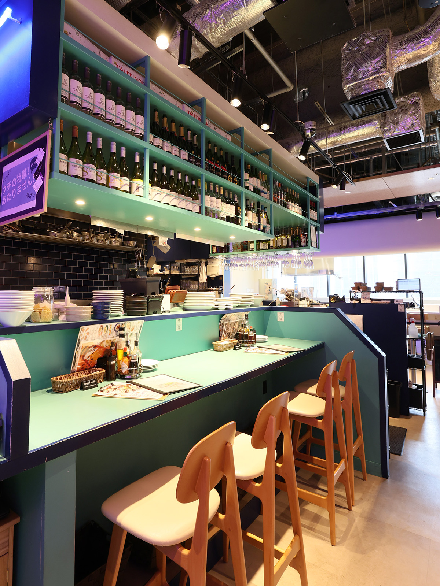
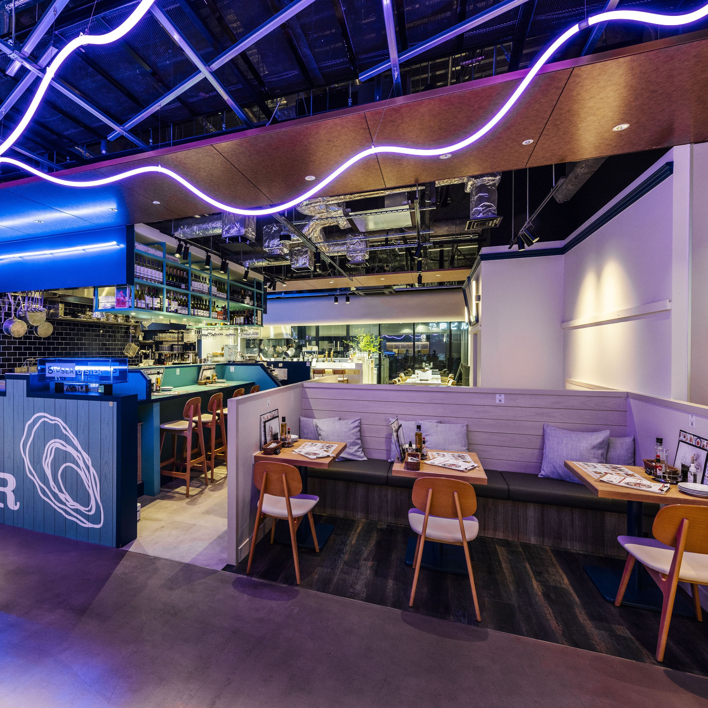
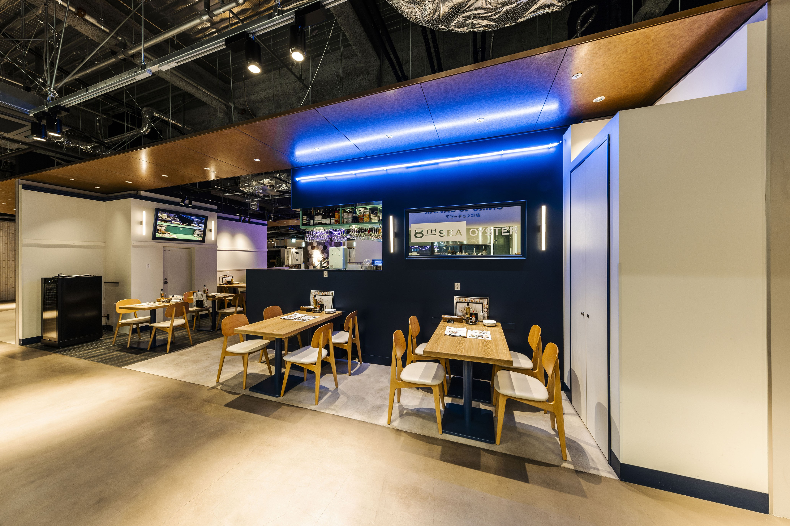
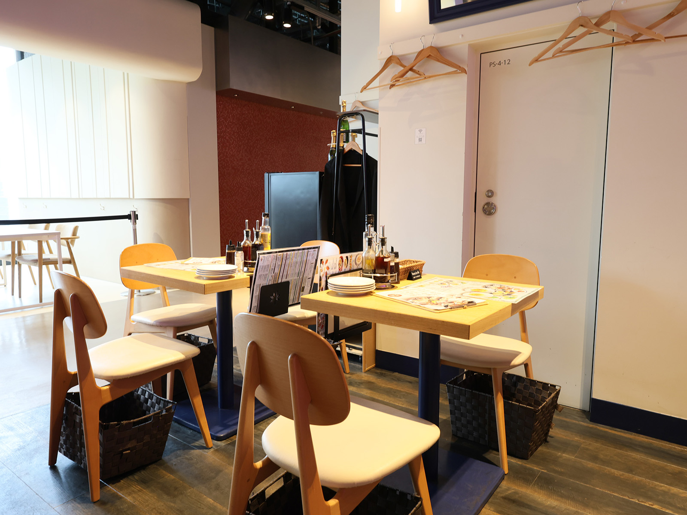

GUESTS For first-time users
Welcome to 8TH SEA OYSTER Bar
We look forward to welcoming everyone who has arrived at this page.
Here in Susukino, Sapporo, seasonal oysters and Italian technique come together for a memorable meal.
To help you enjoy that experience with confidence,
we have gathered a few things worth knowing before your first visit.
A little preparation leads to a more comfortable time.
Please feel free to read through it.
First of all, why not get to know the atmosphere of the store?
The daily atmosphere of 8TH SEA OYSTER Bar is shared on social media.
You can check today's recommendations, seasonal oyster dishes, and the mood of our Susukino location.
It is a simple way to get a feel for the restaurant before visiting.
Once you have decided on the date and time of your visit, please make a reservation.
8TH SEA OYSTER Bar recommends making reservations by phone.
By interacting directly with staff,
We can provide you with more detailed information or special consultations.
Reasons why we recommend making reservations by phone:
All you need to tell us is your name, preferred time, and party size.
You can also discuss seating preferences and the oysters you hope to enjoy in Sapporo that day.
Click here for reservations outside business hours
If you would like to make a reservation outside of business hours, please use online reservations from Tabelog.
We accept reservations 24 hours a day.
How to choose the time to visit ~ Tips for hitting hidden spots ~
very crowded
Friday/Saturday
18:00 ～ 23:00
Especially at night, it is often fully booked.
Early reservations are recommended.
Slightly crowded
weekday night
(Subject to change depending on the day of the week)
It gets a little crowded at night on certain days of the week.
Please inquire when making a reservation.
relatively empty
weekday lunch
weekday evening
slowly
Enjoy.
adults only
Perfect for a relaxing time.
Please let us know when making a reservation by phone.
Raw oysters arrive differently each day.
When making a reservation before coming to our restaurant, please let us know about the oysters you would like to eat.
We will do our best to accommodate your needs.
There are oysters I want to eat.
“I want to eat oysters from ○○.”
``5 pieces of large size'' etc.
We would like to hear your wishes.
seat preference
"I like the counter seats."
``I'd like a wider seat,'' etc.
You can choose from the atmosphere.
Allergy consultation
Allergies to oysters and ingredients
Please let us know in advance.
We will do our best to accommodate your request.
This is your special time
A space with warm lighting, a sophisticated counter, and an Italian scent.
A relaxing oyster bar for adults.
"If you tell me what seat you'd like, I'll reserve it for you."
On the phone, I would say things like ``I'd like a seat at the edge of the counter'' or ``I'd like a wider seat.''
Please let us know your wishes. We will respond as best we can given the circumstances on that day.




Things you should know before visiting
💰 About fees
- Seat fee: None ~ Please feel free to come by
- No one-order system ~ There is no compulsion to eat or drink.
- Drinks only are also OK. ~ Enjoy your wonderful time
- Bringing in food only: Not allowed ~ Please refrain from doing so due to ingredients management issues.
⏰ About stay time
There is no time limit for seating. (Excluding times of congestion)
Please enjoy it slowly.
*During busy times, we may notify you of the closing time considering the turnover rate.
📦 About sold out
Freshness is our top priority, so our inventory varies each day.
Raw oysters may be sold out.
In that case, we will suggest today's recommendations.
Please let us know your preference by phone in advance.
We will do our best to secure the ingredients.
Let's get started
If you have any questions or concerns, please contact us.
Please feel free to call us anytime.
Our staff is looking forward to your visit.